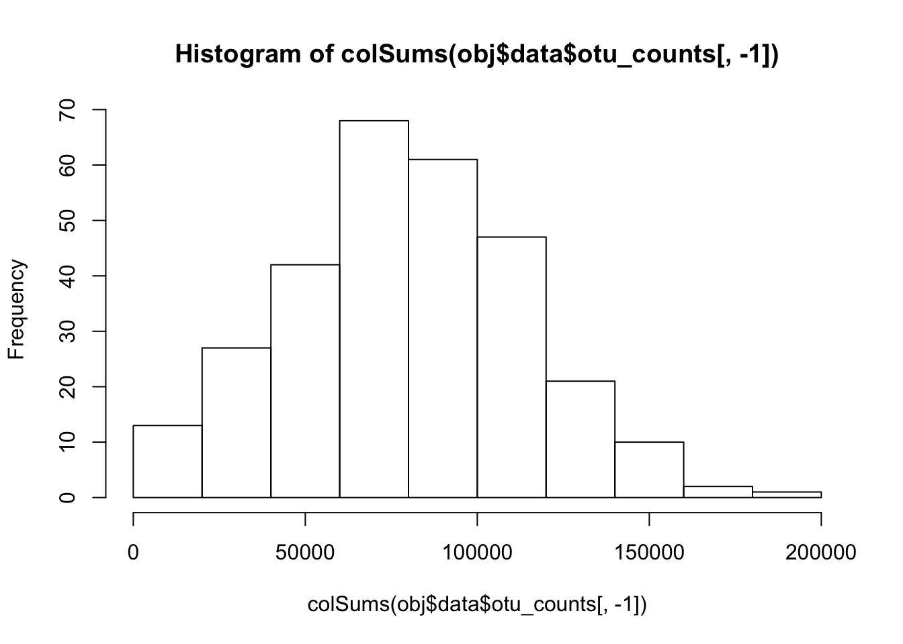
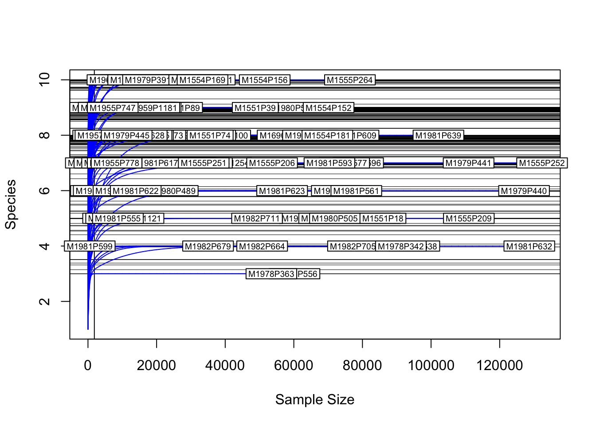

Data quality control
Sequencing technologies all have some amount of error. Some of this error happens during PCR and some happens during sequencing. There are lots of ways to filter out errors including:
- Removing sequences/bases that the sequencer indicates are low quality. This information is typically in the .fastq files returned by the sequencer. There are many programs, such as “trimmomatic”, that can use the quality scores in these files to filter out low-quality sequences.
- Clustering similar sequences together. Many erroneous sequences are very similar to the true sequences, so they will be incorporated into the same OTU as the true sequence. In that sense, clustering into OTUs will hide some sequencing error.
- Remove of chimeric sequences. “Chimeras” are more significant errors that occur during PCR when an incomplete amplicon acts as a primer for a different template in a subsequent cycle. Most amplicon metagenomic pipelines (e.g. QIIME, mothur, usearch) have functions to detect and remove chimeras.
- Removing low-abundance sequences. Most of the time erroneous sequences will occur much less often than the true sequence. Simply removing any unique sequence / OTU that appears less than some minimum number of times is an effective way to remove these errors. OTUs represented by only a single sequence are commonly called “singletons”. So when you hear things like “singletons were removed” and means all OTUs with only a single sequence were removed.
- Rarefying read counts. Usually, we try to make each sample in a sequencing run have a the same number of reads sequenced, but that does not always happen. When a sample has many more reads than another sample, its apparent diversity can be artificially inflated since rare taxa are more likely to be found. To avoid this, the reads are subsampled to a fixed number or “rarefied”.
- Converting counts to presence/absence. Due to PCR biases and the nature of compositional data, many researchers advocate not useing read count information at all. Instead, they reccomend converting counts to simply “present” or “absent”.
Since we are only working with abundance matrices in these tutorials, the first three types of quality control have already been done (ideally), but we can still remove low-abundance OTUs and rarefy the counts of the remaining OTUs.
Load example data
If you are starting the workshop at this section, or had problems running code in a previous section, use the following to load the data used in this section. If obj and sample_data are already in your environment, you can ignore this and proceed.
load("filtered_data.Rdata")Removing low-abundance counts
The easiest way to get rid of some error in your data is to throw out any count information below some threshold. The threshold is up to you; removing singletons or doubletons is common, but lets be more conservative and remove any counts less than 10.
library(metacoder)## Loading required package: taxaobj$data$otu_counts <- zero_low_counts(obj, "otu_counts", min_count = 10)## Converting to zero all counts less than 10.## No `cols` specified, so using all numeric columns:
## M1981P563, M1977P1709, M1980P502, M1981P606 ... M1955P747, M1978P342, M1955P778## Zeroing 576512 of 9823172 counts less than 10.That set all read counts less than 10 to zero. It did not filter out any OTUs or their assocaited taxa however. We can do that using filter_obs, which is used to filter data assoicated with a taxonomy in a taxmap object. First lets find which OTUs now have now reads assocaited with them.
no_reads <- rowSums(obj$data$otu_counts[, sample_data$SampleID]) == 0
sum(no_reads) # when `sum` is used on a TRUE/FALSE vector it counts TRUEs## [1] 26947So now 26947 of 33641 have no reads. We can remove them and the taxa they are assocaited with like so:
obj <- filter_obs(obj, "otu_counts", ! no_reads, drop_taxa = TRUE)
print(obj)## <Taxmap>
## 489 taxa: aad. Bacteria ... axx. Fusobacteriales, bxz. Fusobacteriaceae
## 489 edges: NA->aad, aad->aaf, aaf->add ... aad->abx, abx->aja, aja->axx, axx->bxz
## 1 data sets:
## otu_counts:
## # A tibble: 6,694 x 293
## taxon_id M1981P563 M1977P1709 M1980P502 M1981P606 M1981P599 M1981P611 M1981P587
## <chr> <dbl> <dbl> <dbl> <dbl> <dbl> <dbl> <dbl>
## 1 ben 0 0 0 0 0 0 24
## 2 beo 10251 59 15857 309 134 90 11391
## 3 ben 1447 2496 2421 3331 143 1847 2120
## # ... with 6,691 more rows, and 285 more variables: M1982P729 <dbl>, M1979P447 <dbl>,
## # M1982P701 <dbl>, M1982P661 <dbl>, M1978P293 <dbl>, M1980P462 <dbl>, M1555P221 <dbl>,
## # M1980P471 <dbl>, M1979P422 <dbl>, M1982P655 <dbl>, M1554P182 <dbl>, M1981P623 <dbl>,
## # M1555P239 <dbl>, M1958P1020 <dbl>, M1555P205 <dbl>, M1959P1121 <dbl>, M1551P83 <dbl>,
## # M1961P1359 <dbl>, M1551P21 <dbl>, M1690P1399 <dbl>, M1555P214 <dbl>, M1955P819 <dbl>,
## # M1979P426 <dbl>, M1957P982 <dbl>, M1979P369 <dbl>, M1690P1397 <dbl>, M1978P318 <dbl>,
## # M1956P853 <dbl>, M1979P381 <dbl>, M1960P1219 <dbl>, M1554P112 <dbl>, M1980P533 <dbl>,
## # M1554P138 <dbl>, M1982P711 <dbl>, M1978P307 <dbl>, M1982P696 <dbl>, M1555P231 <dbl>,
## # M1980P520 <dbl>, M1555P190 <dbl>, M1955P739 <dbl>, M1981P578 <dbl>, M1980P506 <dbl>,
## # M1981P631 <dbl>, M1980P461 <dbl>, M1982P667 <dbl>, M1980P496 <dbl>, M1982P707 <dbl>,
## # M1980P469 <dbl>, M1980P486 <dbl>, M1980P532 <dbl>, M1977P1714 <dbl>, M1981P597 <dbl>,
## # M1977P1705 <dbl>, M1955P764 <dbl>, M1981P588 <dbl>, M1982P709 <dbl>, M1980P475 <dbl>,
## # M1980P539 <dbl>, M1982P645 <dbl>, M1981P577 <dbl>, M1980P535 <dbl>, M1981P609 <dbl>,
## # M1554P132 <dbl>, M1981P556 <dbl>, M1551P92 <dbl>, M1981P638 <dbl>, M1551P67 <dbl>,
## # M1979P439 <dbl>, M1551P37 <dbl>, M1981P586 <dbl>, M1555P256 <dbl>, M1961P1298 <dbl>,
## # M1554P124 <dbl>, M1955P814 <dbl>, M1555P238 <dbl>, M1961P1308 <dbl>, M1979P378 <dbl>,
## # M1982P705 <dbl>, M1555P212 <dbl>, M1980P481 <dbl>, M1979P383 <dbl>, M1981P632 <dbl>,
## # M1555P240 <dbl>, M1981P561 <dbl>, M1554P128 <dbl>, M1982P664 <dbl>, M1978P356 <dbl>,
## # M1980P538 <dbl>, M1980P499 <dbl>, M1982P683 <dbl>, M1980P507 <dbl>, M1980P501 <dbl>,
## # M1955P745 <dbl>, M1977P1711 <dbl>, M1980P476 <dbl>, M1982P646 <dbl>, M1982P703 <dbl>,
## # M1981P584 <dbl>, M1980P470 <dbl>, M1956P899 <dbl>, ...
## 0 functions:Rarefaction
Rarefaction is used to simulate even sampling depth. Even sampling depth is important for at least two reasons:
- When comparing diversity of samples, a higher sampling depth can inflate appparent diverstiy since more rare species are likely to be found. The effect of this will depend on the diversity index used.
- When comparing the similarity of samples, the presence of rare species due to higher sampling depth in one sample but not another can make the two samples appear more differnet than they actually are.
Therefore, when comparing the diversity or similarity of samples, it is important to rarefy, or subsample, to a constant depth. Typically, the depth chosen is the minimum sample depth. If the minimum depth is very small, the samples with the smallest depth can be removed and the minimum depth of the remaining samples can be used.
Lets take a look at the distribution of read depths of our samples:
hist(colSums(obj$data$otu_counts[, -1]))
We have a minimum depth of 1857, a median of 78767 and a maximum depth of 1.8935310^{5}. We could try to remove one or two of the samples with the smallest depth, since it seems like a waste to throw out so much data, but for this tutorial we will just rarefy to the minimum of 1857 reads. The vegan package implements many functions to help with rarefying data, but we will use a function from metacoder that calls the functions from vegan and reformats the input and ouputs to make them easier to use with the way our data is formatted.
obj$data$otu_rarefied <- rarefy_obs(obj, "otu_counts")## No `cols` specified, so using all numeric columns:
## M1981P563, M1977P1709, M1980P502, M1981P606 ... M1955P747, M1978P342, M1955P778## Rarefying to 1857 since that is the lowest sample total.print(obj)## <Taxmap>
## 489 taxa: aad. Bacteria ... axx. Fusobacteriales, bxz. Fusobacteriaceae
## 489 edges: NA->aad, aad->aaf, aaf->add ... aad->abx, abx->aja, aja->axx, axx->bxz
## 2 data sets:
## otu_counts:
## # A tibble: 6,694 x 293
## taxon_id M1981P563 M1977P1709 M1980P502 M1981P606 M1981P599 M1981P611 M1981P587
## <chr> <dbl> <dbl> <dbl> <dbl> <dbl> <dbl> <dbl>
## 1 ben 0 0 0 0 0 0 24
## 2 beo 10251 59 15857 309 134 90 11391
## 3 ben 1447 2496 2421 3331 143 1847 2120
## # ... with 6,691 more rows, and 285 more variables: M1982P729 <dbl>, M1979P447 <dbl>,
## # M1982P701 <dbl>, M1982P661 <dbl>, M1978P293 <dbl>, M1980P462 <dbl>, M1555P221 <dbl>,
## # M1980P471 <dbl>, M1979P422 <dbl>, M1982P655 <dbl>, M1554P182 <dbl>, M1981P623 <dbl>,
## # M1555P239 <dbl>, M1958P1020 <dbl>, M1555P205 <dbl>, M1959P1121 <dbl>, M1551P83 <dbl>,
## # M1961P1359 <dbl>, M1551P21 <dbl>, M1690P1399 <dbl>, M1555P214 <dbl>, M1955P819 <dbl>,
## # M1979P426 <dbl>, M1957P982 <dbl>, M1979P369 <dbl>, M1690P1397 <dbl>, M1978P318 <dbl>,
## # M1956P853 <dbl>, M1979P381 <dbl>, M1960P1219 <dbl>, M1554P112 <dbl>, M1980P533 <dbl>,
## # M1554P138 <dbl>, M1982P711 <dbl>, M1978P307 <dbl>, M1982P696 <dbl>, M1555P231 <dbl>,
## # M1980P520 <dbl>, M1555P190 <dbl>, M1955P739 <dbl>, M1981P578 <dbl>, M1980P506 <dbl>,
## # M1981P631 <dbl>, M1980P461 <dbl>, M1982P667 <dbl>, M1980P496 <dbl>, M1982P707 <dbl>,
## # M1980P469 <dbl>, M1980P486 <dbl>, M1980P532 <dbl>, M1977P1714 <dbl>, M1981P597 <dbl>,
## # M1977P1705 <dbl>, M1955P764 <dbl>, M1981P588 <dbl>, M1982P709 <dbl>, M1980P475 <dbl>,
## # M1980P539 <dbl>, M1982P645 <dbl>, M1981P577 <dbl>, M1980P535 <dbl>, M1981P609 <dbl>,
## # M1554P132 <dbl>, M1981P556 <dbl>, M1551P92 <dbl>, M1981P638 <dbl>, M1551P67 <dbl>,
## # M1979P439 <dbl>, M1551P37 <dbl>, M1981P586 <dbl>, M1555P256 <dbl>, M1961P1298 <dbl>,
## # M1554P124 <dbl>, M1955P814 <dbl>, M1555P238 <dbl>, M1961P1308 <dbl>, M1979P378 <dbl>,
## # M1982P705 <dbl>, M1555P212 <dbl>, M1980P481 <dbl>, M1979P383 <dbl>, M1981P632 <dbl>,
## # M1555P240 <dbl>, M1981P561 <dbl>, M1554P128 <dbl>, M1982P664 <dbl>, M1978P356 <dbl>,
## # M1980P538 <dbl>, M1980P499 <dbl>, M1982P683 <dbl>, M1980P507 <dbl>, M1980P501 <dbl>,
## # M1955P745 <dbl>, M1977P1711 <dbl>, M1980P476 <dbl>, M1982P646 <dbl>, M1982P703 <dbl>,
## # M1981P584 <dbl>, M1980P470 <dbl>, M1956P899 <dbl>, ...
## otu_rarefied:
## # A tibble: 6,694 x 293
## taxon_id M1981P563 M1977P1709 M1980P502 M1981P606 M1981P599 M1981P611 M1981P587
## * <chr> <dbl> <dbl> <dbl> <dbl> <dbl> <dbl> <dbl>
## 1 ben 0 0 0 0 0 0 0
## 2 beo 362 0 414 9 134 2 405
## 3 ben 44 31 79 61 143 40 95
## # ... with 6,691 more rows, and 285 more variables: M1982P729 <dbl>, M1979P447 <dbl>,
## # M1982P701 <dbl>, M1982P661 <dbl>, M1978P293 <dbl>, M1980P462 <dbl>, M1555P221 <dbl>,
## # M1980P471 <dbl>, M1979P422 <dbl>, M1982P655 <dbl>, M1554P182 <dbl>, M1981P623 <dbl>,
## # M1555P239 <dbl>, M1958P1020 <dbl>, M1555P205 <dbl>, M1959P1121 <dbl>, M1551P83 <dbl>,
## # M1961P1359 <dbl>, M1551P21 <dbl>, M1690P1399 <dbl>, M1555P214 <dbl>, M1955P819 <dbl>,
## # M1979P426 <dbl>, M1957P982 <dbl>, M1979P369 <dbl>, M1690P1397 <dbl>, M1978P318 <dbl>,
## # M1956P853 <dbl>, M1979P381 <dbl>, M1960P1219 <dbl>, M1554P112 <dbl>, M1980P533 <dbl>,
## # M1554P138 <dbl>, M1982P711 <dbl>, M1978P307 <dbl>, M1982P696 <dbl>, M1555P231 <dbl>,
## # M1980P520 <dbl>, M1555P190 <dbl>, M1955P739 <dbl>, M1981P578 <dbl>, M1980P506 <dbl>,
## # M1981P631 <dbl>, M1980P461 <dbl>, M1982P667 <dbl>, M1980P496 <dbl>, M1982P707 <dbl>,
## # M1980P469 <dbl>, M1980P486 <dbl>, M1980P532 <dbl>, M1977P1714 <dbl>, M1981P597 <dbl>,
## # M1977P1705 <dbl>, M1955P764 <dbl>, M1981P588 <dbl>, M1982P709 <dbl>, M1980P475 <dbl>,
## # M1980P539 <dbl>, M1982P645 <dbl>, M1981P577 <dbl>, M1980P535 <dbl>, M1981P609 <dbl>,
## # M1554P132 <dbl>, M1981P556 <dbl>, M1551P92 <dbl>, M1981P638 <dbl>, M1551P67 <dbl>,
## # M1979P439 <dbl>, M1551P37 <dbl>, M1981P586 <dbl>, M1555P256 <dbl>, M1961P1298 <dbl>,
## # M1554P124 <dbl>, M1955P814 <dbl>, M1555P238 <dbl>, M1961P1308 <dbl>, M1979P378 <dbl>,
## # M1982P705 <dbl>, M1555P212 <dbl>, M1980P481 <dbl>, M1979P383 <dbl>, M1981P632 <dbl>,
## # M1555P240 <dbl>, M1981P561 <dbl>, M1554P128 <dbl>, M1982P664 <dbl>, M1978P356 <dbl>,
## # M1980P538 <dbl>, M1980P499 <dbl>, M1982P683 <dbl>, M1980P507 <dbl>, M1980P501 <dbl>,
## # M1955P745 <dbl>, M1977P1711 <dbl>, M1980P476 <dbl>, M1982P646 <dbl>, M1982P703 <dbl>,
## # M1981P584 <dbl>, M1980P470 <dbl>, M1956P899 <dbl>, ...
## 0 functions:Rarefaction curves
library(vegan)## Loading required package: permute## Loading required package: lattice## This is vegan 2.4-3rarecurve(t(obj$data$otu_counts[1:10, -1]), step = 20,
sample = min(colSums(obj$data$otu_counts[, -1])), col = "blue", cex = 0.6)
Converting to presence/absence
Saving the data for the next section
In the next section we will work on analyzing this data set. Don’t worry about running the following code; it is just there to let us use the same data set on multiple website pages.
save(obj, sample_data, file = "clean_data.Rdata")
Analysis of Microbiome Community Data in R by The Grunwald lab and the USDA Horticultural Crops Research Unit is licensed under a Creative Commons Attribution-ShareAlike 4.0 International License.
Based on a work at https://github.com/grunwaldlab/analysis_of_microbiome_community_data_in_r.